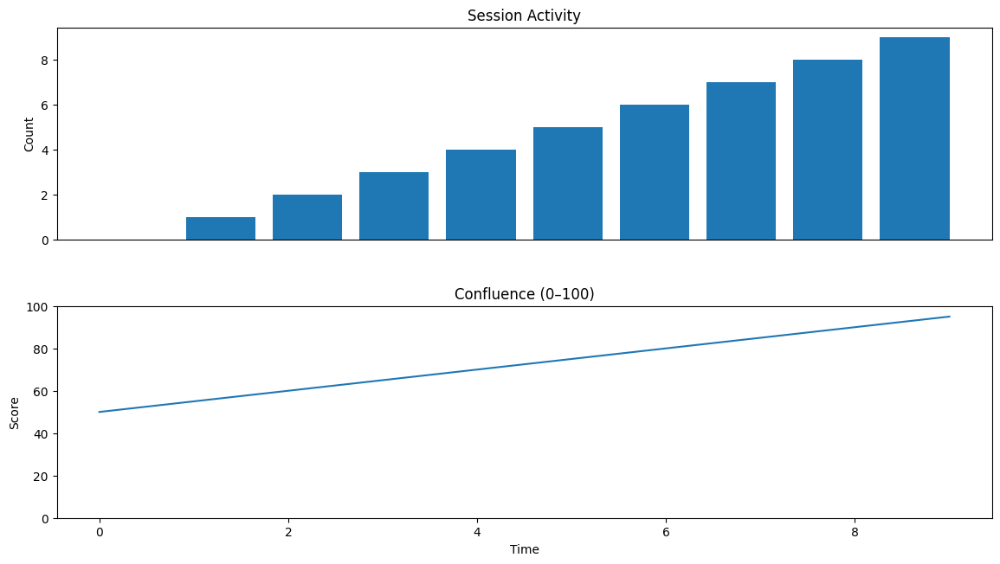

IRONFORGE — Minimal Report
AUX: Post-Zone Trajectories
Zones: 10 | Populated: 70.0%
Hit Rates (12b):
50_ticks: 0.0%
100_ticks: 0.0%
200_ticks: 0.0%
Avg Returns: 3b=0.03% | 12b=nan% | 24b=nan%
AUX: HTF Phase Stratification
Buckets: 4 total | 4 valid (n≥2)
Best P(hit_+100_12b):
regime_1: 0.0% (n=10)
f49_bin_0: 0.0% (n=6)
f49_bin_1: 0.0% (n=2)
AUX: Event Chains
Chains: 5 | Avg span: 8.8 bars (45 min)
Types:
demo_chain_0: 1
demo_chain_1: 1
demo_chain_2: 1
Subsequent returns:
μ=-0.49% σ=1.08% (n=5)

Motifs
Name
Support
PPV
zone_0
[Arch: 0.003, none]
0.8
0.65
zone_3
[Arch: 0.085, demo]
0.7
0.58
zone_2
[Arch: 0.054, demo]
0.6
0.52